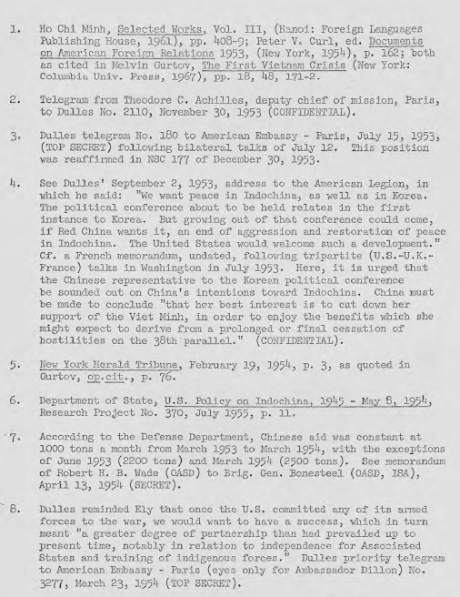
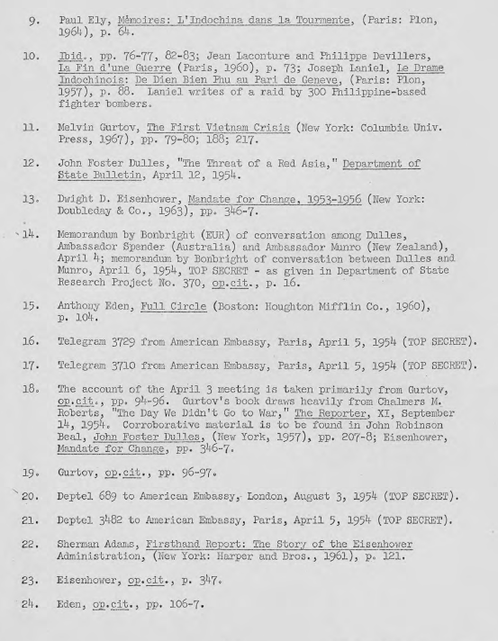
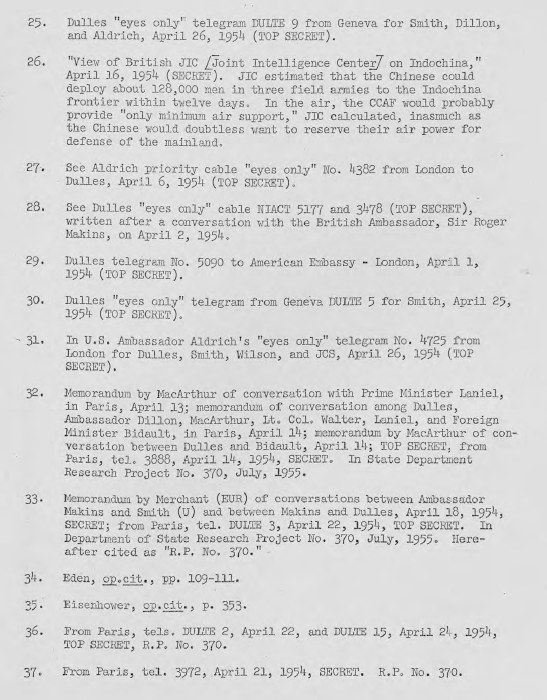
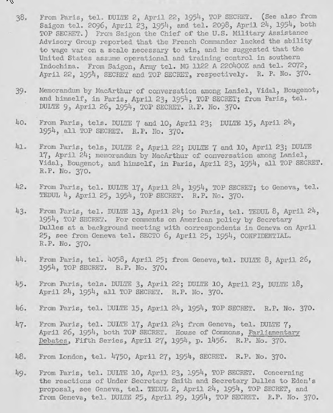
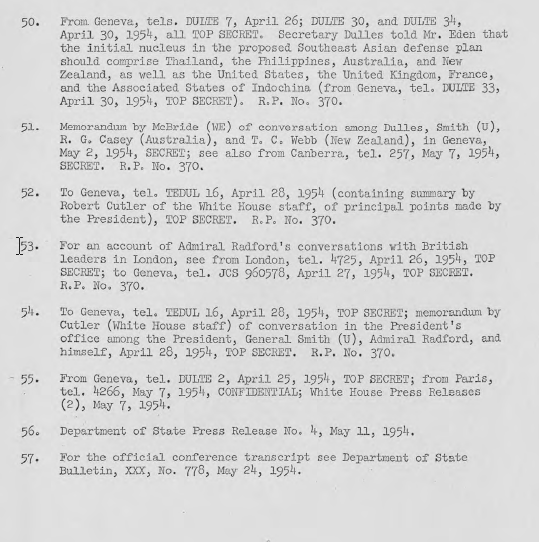

Hội nghị Berlin năm 1954
Việt Minh của Việt Minh và thái độ của Pháp
Đầu tiên Hoa Kỳ chống việc đàm phán
B-17
B-17
B-18
Đoàn công tác Ely (20-24 tháng ba)
a. Điện Biên Phủ bắt đầu
b. Chiến dịch Diều Hâu
B-19
B-19
B-19
B-20
B-20
B-22
B-22
B-23
B-24
B-25
B-27
B-27
B-28
B-28
B-29
B-30
5. Đánh giá lại thuyết Domino sau khi Điện Biên Phủ
B-30
Hội nghị Berlin năm 1954
Các cuộc đàm phán cho một giải pháp chính trị cho chiến tranh Pháp-Việt Minh thực tế đã được đảm bảo khi nó đã được quyết định tại cuộc họp của bốn cường quốc [Mỹ, Anh, Pháp, Trung Cộng] ở Berlin vào tháng 2 năm 1954 rằng vấn đề Đông Dương sẽ được thêm vào chương trình nghị sự của hội nghị quốc tế sắp tới tại Geneva để thảo luận chủ yếu là để giải quyết chiến tranh Triều Tiên. Thời gian giữa hội nghị Berlin và Giơ-ne-vơ (tức là giữa tháng hai và tháng 5 năm 1954) bất ngờ chứng kiến một đoạn kết của bộ phim Đông Dương với cuộc vây hãm và sụp đổ của Điện Biên Phủ, quyết định của Hoa Kỳ không can thiệp, và nỗ lực không thành công của Hoa Kỳ để tập hợp đồng minh với nhau để tạo thành một lực lượng chung để theo đuổi việc "thống nhất hành động" ở Đông Dương.
Chiến lược của Việt Minh và thái độ của Pháp
Nửa năm trước khi hội nghị Các Bộ trưởng Ngoại giao tại Berlin vào tháng 2 năm 1954 đã chứng kiến hai chuyện: một đánh dấu bằng hoạt động quân sự của Việt Minh và một là những đề nghị thăm dò hòa bình của Hồ Chí Minh. Quân đội nhân dân Việt Nam (VPA) đã bắt đầu thay đổi chiến lược chống Pháp từ hoạt động du kích tới việc triển khai chiến đấu chính quy. Điều này đi kèm với viện trợ quân sự gia tăng của Trung Quốc, chắc chắn là nhờ điều kiện thuận lợi do cuộc xung đột vũ trang ở Hàn Quốc chấm dứt. Do đó, Việt Minh đã xuất hiện với một sức mạnh và sự tự tin mới, mặc dù tại thời điểm đó Pháp đã từ chối nhìn nhận điều này, hoặc công khai hoặc tự chính bản thân họ.
Trong khi đó, Hồ Chí Minh đưa ra một thăm dò hòa bình vào cuối tháng 11 năm 1953 trả lời những câu hỏi của một phóng viên cho tờ báo Thụy Điển Expressen. Một trong những điều kiện tiên quyết do Hồ đưa ra cho các cuộc đàm phán là Pháp phải công nhận độc lập Việt Nam. Trong những tuần tiếp theo, việc thăm dò hòa bình đã được lặp đi lặp lại nhiều lần, nhưng mỗi lần đều thất bại để chỉ ra nơi có thể được tổ chức cuộc đàm phán, phạm vi cho các cuộc đàm phán cũng không định ra được. 1/
Không có kết quả gì trực tiếp từ những thăm dò hòa bình, nhưng gián tiếp, nó đã làm cho khối lượng dân chúng và tình cảm chính trị ở Pháp ngày càng tang đòi chấm dứt cuộc chiến tranh dai dẳng và tốn kém. Các thỏa thuận đàm phán trong hiệp ước đình chiến tại Panmunjom trong tháng 7 năm 1953 phục vụ như một ví dụ mà nhiều người Pháp hy vọng có thể được theo sau với việc đàm phán ngừng bắn với VNDCCH. Một làn sóng thất vọng về chiến tranh Đông Dương đã tràn ngập Pháp. Điều này được phản ánh trong báo cáo trước công chúng của Thủ tướng Laniel rằng Paris sẽ hài lòng với một "giải pháp danh dự " cho chiến tranh.
Người Pháp sau đó đã thông qua một chính sách chiến tranh "vừa đánh vừa đàm". Đã có gia tăng trong hoạt động quân sự và sự tự tin của Pháp kích thích bởi kế hoạch Navarre, nhưng những điều này đã bị xóa đi bởi sự lớn mạnh về kích thước và ảnh hưởng của phe chủ hòa ở Pháp, như các phiếu biểu quyết của phe “bồ câu” trong Quốc hội muốn sớm giải quyết cuộc chiến tranh đã quá lâu. Thủ tướng Laniel và các quan chức Pháp nói với Đại sứ quán Hoa Kỳ rằng họ cho là những gì Hồ Chí Minh đề nghị chỉ là thuần tuyên truyền, nhưng cũng cho biết những động tác của Hồ Chí Minh đã tạo ra các tác động có chủ ý lên các nhóm công chúng và quân sự tại Pháp và Đông Dương. Laniel đã đề cập rằng Tổng thống Vincent Auriol đã hồ hởi bởi đề nghị của Hồ và ông đã nói với Laniel rằng "tham khảo ý kiến đại diện của ba nước liên hiệp ngay lập tức theo hướng là tìm cách mở càng sớm càng tốt các cuộc đàm phán với đại diện của Hồ Chí Minh. Laniel đã từ chối thẳng thừng". Tuy nhiên, quan chức Hoa Kỳ tỏ ra nghi ngờ. Đại sứ quán Hoa Kỳ thông báo rằng một bài phát biểu Laniel ngày 24 tháng 11 năm 1953, " đã để một biên độ đáng kể cho các cuộc đàm phán", và những đề nghị của Hồ Chí Minh đã làm tăng áp lực để giải quyết. 2/
Đầu tiên Hoa Kỳ chống việc đàm phán
Chính sách nhất quán của Hoa Kỳ là cố gắng để lèo lái Pháp chỉ đàm phán khi có lợi thế quân sự đáng kể trên chiến trường. Trong các cuộc đàm phán song phương Mỹ-Pháp vào tháng Bảy, năm 1953, trong lúc hiệp ước đình chiến ở Hàn Quốc đang được thảo luận tại Panmunjom, Bộ trưởng Ngoại giao Bidault [Pháp] nói với Bộ Trưởng Ngoại Giao [Mỹ] Dulles rằng các cuộc đàm phán về Đông Dương cần được theo đuổi song song. Bidault giải thích rằng công chúng Pháp sẽ không bao giờ hiểu lý do tại sao các cuộc đàm phán phù hợp và danh dự cho Hàn Quốc nhưng lại không được cho Đông Dương. Một lệnh ngừng bắn tại Hàn Quốc, với không có gì tương tự trong viễn ảnh của Đông Dương, sẽ làm cho chính phủ của ông đứng vào vị trí "hoàn toàn không thể."
Bộ trưởng Dulles, khi trả lời, nhấn mạnh rằng "cuộc đàm phán không giải pháp thay thế khác thường kết thúc trong sự đầu hàng." Trong trường hợp Hàn Quốc, Dulles cho biết, giải pháp thay thế là mối đe dọa của Hoa Kỳ sẽ dùng "các biện pháp khác và khó chịu" mà những người Cộng sản biết rằng chúng ta đang sở hữu. Ông kêu gọi người Pháp thông qua Kế hoạch Navarre, không chỉ vì lý do quân sự, nhưng bởi vì nó sẽ cải thiện vị trí đàm phán của Pháp. Dulles nói rõ ràng rằng Hoa Kỳ cảm thấy họ không nên ghi chiến tranh Đông Dương vào chương trình nghị sự của hội nghị chính trị sau hiệp ước đình chiến ở Hàn Quốc. 3/ Vị trí của Hoa Kỳ vào thời điểm này là đóng khung không đàm đàm phán về Đông Dương cho đến sau khi có một quyết định của Trung Quốc cắt đứt hoặc cắt giảm viện trợ cho Việt Minh. 4/ Nói chung, Hoa Kỳ tìm cách thuyết phục người Pháp rằng chiến thắng quân sự là bảo đảm duy nhất cho sự thành công ngoại giao.
Dulles muốn Pháp tiếp tục cuộc chiến vì niềm tin sâu sắc của ông rằng Đông Dương là một điểm nối chính trong tuyến ngăn chặn cộng sản. Ngoài ra, Washington đã chắc chắn bị ảnh hưởng bởi các báo cáo lạc quan về tiến độ chiến tranh của Tướng O'Deniel báo cáo từ Sài Gòn rằng một chiến thắng Pháp có thể xảy ra nếu hỗ trợ vật chất của Hoa Kỳ được đưa tới. Ngày 06 Tháng hai năm 1954, một công bố cho biết bốn mươi máy bay ném bom B-26 và 200 kỹ thuật viên bảo trì Hoa Kỳ sẽ được gửi đến Đông Dương. Đô đốc Radford nói với Tiểu ban Quan Hệ Nước Ngoài của Quốc Hội, một tháng trước khi cuộc bao vây Điện Biên Phủ bắt đầu (tháng năm 1954), rằng Kế hoạch Navarre là "một khái niệm chiến lược rộng lớn" mà chỉ trong vòng một vài tháng có thể đảm bảo một biến chuyển thuận lợi trong diễn tiến của chiến tranh. 5/
Tại hội nghị bốn Bộ trưởng Ngoại giao họp vào tháng Hai ở Berlin, tuy nhiên, Bộ trưởng Dulles đã buộc phải thỏa mãn yêu cầu của Pháp là đưa Đông Dương vào chương trình nghị sự ở Geneva. Bidault áp lực Hoa Kỳ bằng cách đe dọa làm chìm dự án cộng đồng Quốc phòng châu Âu lúc ấy là ưu tiên hàng đầu của Mỹ. Dulles không thể ngăn chặn Paris quyết tâm để thảo luận về Đông Dương tại Geneva, trong phân tích cuối cùng, là chiến tranh của Pháp. Ông phải nhận ra rằng Chính phủ Laniel không thể hoàn toàn tránh các cuộc đàm phán mà không bị mất lòng dân và mang lại sự sụp đổ của chính phủ ông vào tay các đảng đối lập chống chiến tranh.
Mỹ đã phản đối thành công những nỗ lực của Liên Xô tại Berlin để đạt được cho Cộng sản Trung Cộng, quy chế một cường quốc tài trợ, và đã sắp xếp thành công, hơn nữa, đưa vào trong thông cáo Berlin một tuyên bố không công nhận ngoại giao, đã chưa được công nhận [ngoại giao], kể cả ngụ ý trong lời mời tham gia, hay tổ chức, Hội nghị Giơ-ne-vơ. 6/
Trận Điện Biên Phủ bắt đầu
Ngày 13 tháng 3 năm 1954, Quân Đội Nhân Dân, dưới sự chỉ huy trực tiếp của Tướng Giáp, bắt đầu cuộc tấn công vào Điện Biên Phủ. Đây là pháo đài ở miền Bắc Việt Nam có một tầm quan trọng về chính trị và tâm lý thực tế đã vượt xa tỷ lệ tương ứng về giá trị chiến lược của nó vì Hội nghị Geneva sắp tới. Việt Minh đã dự kiến một cách chính xác khi đưa ra một lực lượng quyết định, không đề cập đến một chiến thắng, sẽ tăng cường đáng kể sức mạnh của họ tại hội nghị. Hơn nữa, một thất bại của các lực lượng Liên hiệp Pháp sẽ tàn hại ý chí tiếp tục cuộc chiến của Pháp. Việt Minh đã được rất nhiều viện trợ quân sự của Trung Quốc, gia tăng đáng kể đến mức độ bao gồm cả pháo binh và radar. 7/ Khi trận chiến xảy ra, niềm lạc quan tràn ngập các báo cáo của Washington, của công quyền và tư nhân, về chiến tranh nay đã được thay thế với niềm xác tín rằng trừ khi các bước mới cần được thực hiện để đối phó với sự trợ giúp của Trung Quốc, Pháp đã bị ràng buộc để đi theo [chiến tranh].
Tướng Paul Ely, Tham Mưu Trưởng Pháp, đã đến Washington vào ngày 20 tháng Ba để hội ý với các quan chức Hoa Kỳ về tình hình chiến tranh. Mục đích chủ yếu của Ely là nhằm có được sự đảm bảo của Hoa Kỳ can thiệp không quân trong trường hợp có cuộc tấn công trên không của Trung Quốc, và để có được hỗ trợ thêm vật liệu Mỹ, đặc biệt là máy bay ném bom B-26. Sau đó, Dulles nói với Ely rằng ông không thể có câu trả lời về phản ứng với sự can thiệp của không quân Trung Quốc. 8/ Ely cãi lại trong cuốn Ký Ức của mình rằng ông đã nhận được một lời hứa từ Đô đốc Radford, Chủ tịch tham mưu trưởng liên quân, thúc đẩy Hoa Kỳ kịp thời phê duyệt [kế hoạch] ngăn chặn phòng ngừa nếu sự việc phát sinh. 9/ Đối với việc cung cấp máy bay ném bom, thêm 25 máy bay B-26 đã được hứa.
Chiến dịch Diều Hâu
Theo các báo cáo tiếp theo của Pháp, Tướng Ely yêu cầu ở lại Washington thêm 24 giờ so với kế hoạch; trong thời gian đó, Đô đốc Radford đã đưa ra một đề nghị không chính thức nhưng chính yếu cho ông ta. Radford được cho rằng là đã đề nghị một cuộc đột kích ban đêm vào chu vi Điện Biên Phủ bằng máy bay của không quân và Hải quân Mỹ. Kế hoạch, có tên là Chiến dịch Diều Hâu (Operation Vulture), đưa ra sáu mươi B-29 từ phi trường Clark gần Manila, với 150 máy bay chiến đấu của Hạm đội 7 Hoa Kỳ theo hộ tống, tiến hành một cuộc tấn công lớn vào các vị trí của QĐND chung quanh vòng đai Điện Biên Phủ. 10/
Chiến dịch Diều Hâu, theo các nguồn tin Pháp, đã được hình thành bởi một đội ngũ chung gồm các nhân viên quân sự Mỹ-Pháp ở Sài Gòn. Được thừa nhận đấy chỉ là một đề nghị không chính thức chưa nhận được đầy đủ sự ủng hộ của Chính phủ Hoa Kỳ như là một chính sách. Không có hồ sơ nào về Chiến dịch Diều Hâu được tìm thấy trong các tài liệu được nghiên cứu. Trong một cuộc phỏng vấn vào năm 1965, Đô đốc Radford nói rằng không có kế hoạch "Chiến dịch Diều Hâu " nào tồn tại, từ khi lập kế hoạch để hỗ trợ Điện Biên Phủ bằng một cuộc không kích, nó đã không bao giờ vượt qua giai đoạn khái niệm. 11/ Tuy nhiên, một kế hoạch như vậy có thể là một chủ đề thảo luận không chính thức cả ở Việt Nam, và giữa Radford và Ely.
Sự thành hình của chính sách Hoa Kỳ
Cuối tháng ba, một cuộc tranh luận nội bộ trong chính quyền Eisenhower đã đạt đến điểm để công nhận rằng: (a) can thiệp đơn phương của Hoa Kỳ trong chiến tranh Đông Dương sẽ không có hiệu quả nếu không có lực lượng mặt đất, (b) sự tham gia của lực lượng mặt đất của Hoa Kỳ về hậu cần và chính trị là không mong muốn, (c) tốt nhất, một can thiệp của "thế giới tự do" vào Đông Dương để cứu khu vực khỏi chủ nghĩa cộng sản sẽ có hình thức một hoạt động tập thể của các lực lượng đồng minh. Đây những ý kiến đến từ những cuộc thảo luận của NSC, từ báo cáo Ridgway, từ báo cáo của Ủy Ban Đặc Biệt Về Hoa Kỳ và Đông Dương do phó Bộ Trưởng Ngoại Giao W. Bedell Smith, và từ nhữ suy nghĩ chung của Tổng thống Eisenhower (xem Tab 1).
Theo đó, Bộ Trưởng Dulles trong cuộc thảo luận với tướng Ely đã vượt ra ngoài vấn đề hỗ trợ ngay lập tức cho Pháp đồn trú tại Điện Biên Phủ và đề cập việc có thể thành lập một khu vực quốc phòng bố trí cho khu vực Đông Nam Á. Đề xuất này đã được đưa ra trước công chúng trong bài phát biểu ngày 29 tháng 3 của Bộ Trưởng Dulles trước Câu lạc bộ Báo chí nước ngoài. Dulles đã mô tả tầm quan trọng của việc chống lại sự xâm lược của cộng sản ở Đông Dương trong những từ này:
"Nếu các lực lượng Cộng sản đã giành quyền kiểm soát không phản bác trên Đông Dương hoặc bất kỳ phần đáng kể nào, họ chắc chắn sẽ tiếp tục dùng cùng một khuôn mẫu xâm lược để chống lại các dân tộc khác trong khu vực đó.
"[giọng điệu] Tuyên truyền của Cộng Sản Trung Quốc và Liên Xô cho thấy hoàn toàn rõ ràng rằng mục đích của họ là thống trị tất cả các khu vực Đông Nam Á.
"Hiện nay khu vực Đông Nam Á là một phần quan trọng của thế giới, là cái gọi là “vựa lúa"… Đây là một khu vực phong phú về nhiều nguyên liệu thô.
"Và ngoài những giá trị kinh tế to lớn, khu vực này có rất nhiều giá trị chiến lược… Cộng sản kiểm soát Đông Nam Á sẽ thực hiện một mối đe dọa nghiêm trọng đối cho Philippines, Úc và New Zealand... Toàn bộ các khu vực phía tây Thái Bình Dương, bao gồm cả cái gọi là "chuỗi đảo ngoài khơi," về mặt chiến lược là bị nguy hiểm. "
Sau đó ông đã kêu gọi "hành động thống nhất" và sau khi ghi nhận rằng việc Trung Quốc hỗ trợ cho Việt Minh, ông tiên đoán rằng xâm lược này sẽ “dẫn đến những hành động ở những nơi mà kế sách là do các quốc gia tự do lựa chọn, từ đó việc xâm lược chắc chắn sẽ chịu chi phí nhiều hơn những gì nó sẽ đạt được". 12/
Trong những tuần lễ tiếp theo, mục tiêu ngoại giao của Hoa Kỳ là bảo đảm một thỏa thuận liên minh bằng một hiệp ước phòng thủ tập thể bao gồm mười quốc gia: Mỹ, Pháp, Anh, Úc, New Zealand, Philippines, Thái Lan, và ba nước liên hiệp. Ngoại trưởng Dulles trình bày đề xuất của ông trong các cuộc thảo luận với Đại sứ Anh Sir Roger Makins và Đại sứ Pháp Henri Bonnet. Tổng thống Eisenhower gửi một tin nhắn cá nhân cho Thủ tướng Churchill giải thích về đề xuất một liên minh. Tổng thống lưu ý rằng:
"Còn ít hơn bốn tuần nữa là [khởi sự Hội Nghị] Geneva. Khả năng là những người Cộng sản sẽ thọc một mũi nhọn vào giữa các mong muốn của chúng ta, cho rằng trạng thái tinh thần của Pháp, lớn hơn lúc tại Berlin.. Tôi có thể hiểu được những mong muốn rất tự nhiên của Pháp nhằm tìm kiếm một chấm dứt cho cuộc chiến mà họ đã bị đổ máu trong tám năm. Nhưng những tìm kiếm siêng năng của chúng tôi để có được một phương cách ra khỏi cái bế tắc này đã buộc chúng tôi phải miễn cưỡng kết luận rằng không có giải pháp đàm phán về vấn đề Đông Dương mà tự trong bản thân của nó phải có hoặc một phương cách đầu hàng mà không mất mặt cho Pháp, hoặc một sự rút lui không mất mặt cho cộng sản. Giải pháp đầu là quá nghiêm trọng vì những tác động chiến lược rộng lớn mà chúng tôi và ông không thể chấp nhận được...
"Bằng cách nào đó, chúng ta phải xoay sở để có lựa chọn thứ hai."
Tổng thống Eisenhower đã phác thảo sự cần thiết cho một liên minh để sẵn sàng chống lại Cộng sản, nếu điều này chứng tỏ cần thiết. Ông kết luận bằng một câu hỏi lịch sử nhất định để kêu gọi Churchill:
"Nếu tôi có thể tham khảo lại lịch sử, chúng ta đã thất bại trong việc ngăn chặn Hirohito, Mussolini và Hitler bằng cách không hoạt động thống nhất chung và kịp thời. Điều đó đã đánh dấu sự khởi đầu của nhiều năm thảm kịch khắc nghiệt và nguy hiểm tuyệt vọng. Quốc gia của chúng ta đã không học được một cái gì từ bài học đó sao? " 13/
Trong các cuộc thảo luận, nói chung Hoa Kỳ đã tìm cách làm vững chắc ý muốn của các quốc gia tự do trong cuộc khủng hoảng Đông Dương. Nó nhấn mạnh vào cả hai (1) ý định công khai của Pháp về việc trao độc lập thực sự cho ba nước Đông Dương, và (2) điều kiện đã được Pháp chấp nhận tại Berlin để được Hoa Kỳ đồng ý thảo luận về Đông Dương tại Geneva. Điều kiện đó là nước Pháp sẽ không đồng ý với bất kỳ sự sắp xếp nào mà kết quả trực tiếp hay gián tiếp dẫn đến việc Đông Dương được giao vào tay Cộng sản. Hoa Kỳ tìm kiếm sự hỗ trợ vững chắc cho vị trí này, đặc biệt là từ Vương quốc Anh, Australia, và New Zealand. Mặc dù có khả năng là sẽ có những tham gia của Liên Hợp Quốc về vấn đề Đông Dương trong tương lai, nhưng chưa có suy nghĩ nào về hành động ngay lập tức của Liên Hợp Quốc. 14/
Thái Lan và Philippines đã đưa ra một phản ứng thuận lợi để kêu gọi thống nhất hành động. Phản ứng của Anh là thận trọng và do dự. Churchill chấp nhận đề nghị của Eisenhower gửi Bộ Trưởng Ngoại Giao Dulles tới London để hội đàm thêm, nhưng người Anh đã nhìn thấy mối nguy hiểm bức xúc cho một liên minh phòng thủ trước khi hội nghị Giơ-ne-vơ. Eden đã xác định là không được "hối hả đi vào các quyết định quân sự thiếu cân nhắc". Eden sau đó đã viết:
"Tôi hoan nghênh đề xuất của Hoa Kỳ về việc tổ chức phòng thủ Đông Nam Á, vì điều này sẽ góp phần vào sự an toàn của Malaysia và Hồng Kông và sẽ loại bỏ sự bất thường về việc chúng tôi không có mặt trong Hiệp ước ANZUS mà Hoa Kỳ, Úc và New Zealand là thành viên. Nhưng tôi cảm thấy rằng để hình thành và công bố một liên minh phòng thủ, trước khi chúng ta đến bàn hội nghị, sẽ không giúp chúng ta về quân sự và sẽ gây tổn hại cho chúng ta về chính trị, bởi [việc ấy] làm sợ các đồng minh quan trọng tiềm năng... đến đầu tháng Năm, những cơn mưa bắt đầu ở Đông Dương và những chiến dịch lớn của hai bên sẽ không thể có trong vài tháng. Khi mà sự sụp đổ hoàn toàn của các nỗ lực quân sự Pháp trước đó là không thể xảy ra, tôi không nghĩ rằng mối quan tâm ngay bây giờ về tình hình quân sự là yếu tố dẫn dắt chính sách của chúng ta. " 15/
Trả lời của Pháp là đề nghị thống nhất hành động đã bị vượt qua bởi các biến chuyển quân sự ở Điện Biên Phủ. Bộ trưởng Ngoại giao Bidault tranh luận vào ngày 05 tháng 4 cho rằng thời gian tính cho phương cách liên minh là đã qua và số phận của Điện Biên Phủ sẽ được quyết định trong mười ngày tới. 16/ Một ngày trước đó, Đại sứ Douglas Dillon được gọi đến dự một cuộc họp nội các khẩn cấp vào ngày chủ nhật và đã được thông báo bởi Bidault, đi chung với Laniel, rằng " can thiệp vũ trang ngay lập tức của tàu sân bay Hoa Kỳ vào Điện Biên Phủ bây giờ là cần thiết để cứu vãn tình hình". Bidault, sau báo cáo của Navarre về tình trạng tuyệt vọng trên trận địa này và mức độ can thiệp của Trung Quốc hỗ trợ cho các lực lượng của tướng Giáp, đã yêu cầu Đại sứ thẳng thừng đòi Hoa Kỳ hành động, nói rằng "số phận của khu vực Đông Nam Á hiện nay nằm ở Điện Biên Phủ”, và rằng "Geneva sẽ chiến thắng hoặc bị mất tùy thuộc vào kết quả" của trận chiến. 17/ Hoa Kỳ lúc này được kêu gọi hành động nhanh chóng và đơn phương để cứu vãn một tình hình địa phương, chứ không phải là, như Dulles mong muốn, cùng phối hợp với các đồng minh châu Á và phương Tây.
Trong tuần đầu tiên của tháng tư, điều trở nên rõ ràng là vấn đề can thiệp của Hoa Kỳ là rất quan trọng. Trận chiến ở Điện Biên Phủ đã đạt một biên độ lớn khi pháo binh [VN] do Trung Quốc cung cấp đã dập người Pháp và đẩy họ về phía sau. Nếu không có một can thiệp sớm bởi một sức mạnh bên ngoài, hoặc nhóm các cường quốc, vị trí của Pháp tại Điện Biên Phủ là có khả năng bị tràn ngập. Trong dự đoán trước về yêu cầu can thiệp của Pháp, chính quyền Eisenhower đã quyết định tham khảo ý kiến với lãnh đạo Quốc hội. Tổng thống dường như đã nghĩ rằng hỗ trợ của Quốc hội là rất quan trọng cho bất cứ vai trò tích cực nào của Hoa Kỳ có thể đưa vào Đông Dương.
Tài liệu của Chính phủ hiện có không đưa ra những chi tiết của hai cuộc họp được mô tả dưới đây. Tuy nhiên, trên cơ sở của các nguồn tin được công bố, có vẻ đáng tin cậy, ngày 03 Tháng Tư, Bộ trưởng Ngoại giao Dulles và Đô đốc Radford đã gặp gỡ tám đại biểu Quốc hội (ba Cộng hòa và năm Dân chủ) tại Bộ Ngoại giao. 18/ Radford dường như đã vạch ra một kế hoạch cho một cuộc không kích vào quân đội nhân dân Việt Nam (VPA) tại Điện Biên Phủ, xử dụng 200 máy bay từ các tàu sân bay Essex và Boxer, đang diễn tập ở biển Nam Trung Hoa. Một cuộc không kích không thành công có thể cần phải được theo sau bởi một cuộc không kích thứ hai, nhưng lực lượng mặt đất không được dự kiến ở giai đoạn này. Nó đã được xác nhận rằng bom nguyên tử trên tàu sân bay có thể được thả bởi các máy bay, nhưng không có dấu hiệu nào cho thấy có bất kỳ xem xét nghiêm túc để sử dụng vũ khí hạt nhân tại Điện Biên Phủ hoặc ở những nơi khác ở Đông Dương. Trong trường hợp của một sự can thiệp quân sự lớn của Trung Quốc, tuy nhiên, hoàn toàn có thể rằng Hoa Kỳ sẽ trả đũa bằng vũ khí hạt nhân chiến lược chống lại các mục tiêu ở Trung Quốc.
Các nhà lãnh đạo Quốc hội nêu ra câu hỏi về (1) tầm cỡ hỗ trợ của đồng minh cho hành động như vậy, (2) ý kiến của các tham mưu trưởng liên quân khác, (3) sự cần thiết một lực lượng mặt đất nếu một cuộc không kích thứ hai cũng thất bại, và (4) sự nguy hiểm của một sự can thiệp khổng lồ của Trung Quốc có thể biến Đông Dương thành một cuộc chiến tranh loại như Hàn Quốc khác. Radford dường như đã buộc phải thừa nhận rằng chỉ có một tham mưu trưởng liên quân ủng hộ kế hoạch can thiệp. Dulles thừa nhận rằng các đồng minh đã không được tham khảo ý kiến. Kết quả là, Dulles, người đã từng suy nghĩ về một nghị quyết chung của Quốc hội cho phép Tổng thống Hoa Kỳ sử dụng sức mạnh không và hải quân ở Đông Dương (bị cáo buộc là ông đã có sẵn [nghị quyết] trong túi của mình) đã rời cuộc họp mà không có sự hỗ trợ quan trọng nào mà ông cần. Các nhà lãnh đạo Quốc hội đặt ra ba điều kiện cần thiết để có hỗ trợ của họ: (a) hình thành một lực lượng "liên minh" loại đồng minh; (b) tuyên bố của Pháp cho thấy một ý định thúc đẩy độc lập cho ba nước Đông Dương; (c) Pháp thỏa thuận tiếp tục để đoàn viễn chinh của họ ở Đông Dương. Vì vậy Quốc hội đối lập đã đưa phanh vào việc Hoa Kỳ có thể can thiệp đơn phương. 12/ Theo Tóm tắt thông tin của Bộ Ngoại giao sau đó:
"Đó là ý nghĩa của hội nghị rằng Hoa Kỳ không nên can thiệp một mình, nhưng nên cố gắng để bảo đảm sự hợp tác của các quốc gia tự do khác có liên quan trong khu vực Đông Nam Á, và nếu hợp tác như vậy có thể được đảm bảo, có thể xảy ra rằng Quốc hội Hoa Kỳ sẽ ủy quyền cho Hoa Kỳ tham gia trong “hành động thống nhất” như vậy" 20/
Hôm sau, ngày 04 Tháng 4, Dulles và Radford đã gặp Tổng thống tại Nhà Trắng. Tổng thống đạt quyết định chỉ can thiệp khi hội đủ ba điều kiện cần thiết đối với Hoa Kỳ "để cam kết hành động chiến tranh" ở Đông Dương. Sẽ có một liên minh "với sự tham gia hành động của Khối Thịnh vượng Chung Anh", một "sự hiểu biết chính trị đầy đủ " với Pháp và các nước khác, " và được Quốc hội phê duyệt. 21/
Tổng thống Eisenhower rõ ràng là không muốn Hoa Kỳ can thiệp một mình. Ông cũng rất quan tâm làm sao có được hỗ trợ rộng rãi của Quốc hội cho bất cứ bước đi nào khi Hoa Kỳ có thể dính vào chiến tranh. Như Sherman Adams sau đó đã quan sát thấy:
"Tránh được một cuộc chiến tranh toàn diện với Trung Cộng trong năm trước khi khi ông được Liên Hiệp Quốc hỗ trợ ở [chiến tranh] Hàn Quốc, ông [Eisenhower] không có chút hằng hái nào để đi mở một cuộc chiến khác ở Đông Dương bằng hành động quân sự một mình mà không có Anh và Đồng Minh phương Tây. Ông cũng xác định là sẽ không tham gia quân sự trong bất kỳ cuộc xung đột nước ngoài nào mà không có sự chấp thuận của Quốc hội. Ông đã gặp quá đủ khó khăn khi đi thuyết phục một số thượng nghị sĩ, thậm chí cần thiết chỉ để gửi các nhóm nhỏ kỹ thuật viên không chiến đấu của Không quân tới Đông Dương." 22/
Anh Quốc chống “hành động thống nhất”
Từ ngày 11 đến ngày 14 tháng 4, Ngoại trưởng Dulles đã đến thăm London và Paris để cố gắng có được các cam kết của Anh và Pháp hỗ trợ đề xuất của ông cho " hành động thống nhất." Theo Tổng thống Eisenhower, Dulles cảm thấy rằng ông sẽ được Quốc hội bảo đảm hỗ trợ cho "hành động thống nhất" nếu các đồng minh phê duyệt kế hoạch này của mình. 23/
Dulles khám phá ra người Anh phản đối bất kỳ loại hành động quân sự tập thể nào trước Hội nghị Giơ-ne-vơ. Dulles giải thích, theo Eden kể lại, rằng Hoa Kỳ đã kết luận rằng Pháp có thể đã không còn đối phó được với tình hình ở Đông Dương, dù quân sự hay chính trị, một mình. Nếu vị trí Pháp ở Đông Dương sụp đổ, hậu quả trong phần còn lại của Đông Nam Á sẽ nghiêm trọng. Không quân Hoa Kỳ và lực lượng hải quân đã sẵn sàng can thiệp và một số tàu sân bay đã được di chuyển từ Manila tới bờ biển Đông Dương. Phản ánh, Dulles nói, ông đã nghĩ rằng Hoa Kỳ không nên hành động một mình trong vấn đề này và rằng một liên minh cấp tốc đặc biệt có thể được hình thành để về sau có thể phát triển thành một tổ chức quốc phòng khu vực Đông Nam Á. Điều này tự nó sẽ ngăn cản Trung Quốc can thiệp hơn nữa ở Đông Dương và sẽ củng cố vị trí phương Tây tại Geneva bằng cách đưa ra bằng chứng của tình đoàn kết. 24/
Eden đã không bị thuyết phục. Ông đã vẽ ra một sự phân biệt giữa vấn đề dài hạn của an ninh tập thể ở khu vực Đông Nam Á – nó cũng có thể được đảm bảo bằng hiệp ước sau khi Geneva - - và vấn đề "hành động thống nhất" ngay lập tức ở Đông Dương. Ông đã phản đối bất kỳ hành động quân sự hoặc đưa ra cảnh báo như thế trước Hội Nghị Geneva. Người Anh đã sẵn sàng cung cấp cho Pháp những hỗ trợ đầy đủ về ngoại giao tại Geneva, hoặc như là người bảo lãnh của kết luận cuối cùng hoặc là một người tham gia trong các cuộc đàm phán đa phương nếu việc giải quyết không thành hiện thực. Trong trường hợp sau, người Anh sẽ sẵn sàng để thảo luận về một công thức phòng thủ tập thể bao gồm bất kỳ phần đất nào không Cộng sản ở Đông Dương, sẽ hình thành như là kết quả của những cuộc thảo luận ở Geneva. Nhưng trước khi đến Geneva, họ sẽ không cam kết thống nhất hành động.
Anh Quốc phân biệt giữa tính phù hợp của phương án [hành động] thống nhất sau, trái ngược với [phương án do Mỹ đưa ra] là trước ngày Hội nghị [Geneva] được thành lập là dựa trên những nghi ngờ nghiêm trọng về nội dung thực sự của hành động thống nhất. Như Dulles đánh giá một cách chính xác, đằng sau Anh để giải quyết là một "lo sợ rằng nếu chiến đấu tiếp tục, chúng ta cách này hay cách khác sẽ phải tham gia, qua đó nâng cao nguy cơ can thiệp của Trung Cộng và khả năng mở rộng chiến tranh hơn nữa." 25/ Eden tính rằng hành động trước khi Hội nghị sẽ không chỉ phá hủy cơ hội cho một giải pháp hòa bình, nhưng sẽ làm trầm trọng hơn nguy cơ mở rộng chiến tranh. Hoa Kỳ khi lập kế hoạch thừa nhận khả năng lớn là Trung Quốc sẽ can thiệp trực tiếp, và nhân sự tình báo của ông đã kết luận rằng việc phương Tây tham gia sẽ kéo các lực lượng trên bộ và trên không của Trung Cộng vào một khi nỗ lực của Việt Minh trở thành "nghiêm trọng có nguy cơ bị diệt." 26/
Như vậy, trong khi Dulles tức giận ở cách ông cảm thấy người Anh đang tránh né Đông Dương, Eden lại rất bi quan về chất quân sự của Dulles trong một khu vực không chắc có giá trị mà kế hoạch Hoa Kỳ lại không rõ ràng, có nguy cơ cao. Có sự khác biệt đáng kể, trong tâm trí của Eden, giữa việc cảnh báo Cộng sản Trung Quốc không được can thiệp trực tiếp trước khi thực tế xảy ra ([chính sách] mà Anh đã theo đuổi vào giữa năm 1953) và hành động thống nhất, có thể, dù bất kỳ sự đảm bảo nào của liên minh với Bắc Kinh, vãn sẽ được Trung Cộng cho là khiêu khịch 27/
Nghi ngờ của Anh, hơn nữa, là đẩy thêm niềm tin rằng Đông Dương không nhất thiết hoàn toàn bị mất tại Geneva trong trường hợp không có hành động thống nhất. London rõ ràng là rối trí khi nghe người Hoa Kỳ nói về chuyệt "mất" Đông Dương, khi mà ở số 10 Downing Street [địa chỉ của văn phòng Thủ Tướng Anh ở Luân Đôn] cho rằng Pháp không thể thua cuộc chiến vào giữa lúc này [tháng 4 năm 1954] và mùa mưa sắp tới tuy nhiên họ có thể bị xiểng liểng." 28/ Trong khi Dulles luôn nói với người Anh rằng chỉ có hành động thống nhất với sự hình thành của một liên minh là có thể đảm bảo chống lại một chiến thắng ngoại giao hoàn toàn của Cộng sản tại Geneva, Eden cũng không kém phần thuyết phục rằng cách tốt nhất để đảm bảo sự tiếp tục của chiến tranh sẽ là hành động thống nhất, và Pháp, ngay cả sau Điện Biên Phủ, vẫn còn đủ mạnh để ngăn chặn Cộng sản chiếm toàn bộ Đông Dương.
Ngay cả trước khi Dulles bay tới London để lên tiếng với người Anh về hành động thống nhất, chính phủ Churchill đặt câu hỏi chặt chẽ về việc Hoa Kỳ đánh giá Đông Dương. Trong một điện tín ngày 01 Tháng tư, ví dụ, Dulles đã làm thông thoáng những khó chịu của mình về việc Anh từ chối chấp nhận quan điểm cho rằng mất Đông Dương cuối cùng sẽ ảnh hưởng đến lợi ích an ninh của họ [Anh] tại Malaysia, Australia, và New Zealand. 29/ Điều này lại chính là sự thực, như Dulles đã tự mình phát hiện khi ông nói chuyện với Eden ở London và sau đó tại Geneva. Eden kiên định từ chối chấp nhận ý kiến của Dulles cho rằng có sự tương đồng giữa Đông Dương và Malaysia, trả lời lại rằng tình hình ở Malaysia là "nằm trong tay", trong khi ở Đông Dương là rõ ràng không phải như thế. 30/ Đô đốc Radford kết luận vào cuối tháng Tư từ cuộc hội đàm với các Tham Mưu Trưởng của Anh rằng chính sách của Vương quốc Anh dường như "là dựa trên một cơ sở rất hẹp hoàn toàn tuân theo điều kiện riêng của Vương quốc Anh mà không quan tâm đến các khu vực khác của vùng Viễn Đông như Nhật Bản ". 31/
Người Anh chỉ đơn giản là không thể chấp nhận thuyết domino ngay cả khi họ thừa nhận giá trị an ninh của khu vực Đông Nam Á đối với thế giới tự do. Khi khai mạc của Hội nghị Geneva, mối quan hệ Hoa Kỳ và Anh đã đạt đến một điểm thấp: Dulles khẳng định rằng người Anh là rào cản lớn để thực hiện hành động thống nhất, trong khi Eden lại bám vào quan điểm cho rằng đàm phán giải quyết hàng đầu để phân vùng sẽ được kết quả tốt nhất cho một tình hình chính trị-quân sự cực kỳ phức tạp ở Đông Dương.
Ngoại trưởng Dulles ở tình trạng khá hơn trong việc thuyết phục Paris về "thống nhất hành động" hơn là ông đã làm tại London, nhưng vì lý do hơi khác nhau. Người Pháp đang tìm kiếm một hành động nhanh chóng để tránh một thất bại quân sự không thể tránh khỏi ở Điện Biên Phủ. Dulles, tuy nhiên, từ chối bị phân tán bởi cách tiếp cận tập thể liên quan đến chiến tranh Đông Dương. Pháp lo ngại rằng một thỏa thuận liên minh sẽ dẫn đến việc quốc tế hóa cuộc chiến và lấy sự kiểm soát [Đông Dương] ra khỏi bàn tay của họ. Do đó, họ chỉ mong muốn hỗ trợ cục bộ tại Điện Biên Phủ theo đường hướng của chiến dịch Diều Hậu
Hơn nữa, một phản đối "hành động thống nhất" theo quan điểm của Pháp là nó chỉ trì hoãn hoặc cản trở các cuộc đàm phán rất hàng đầu hướng tới một giải quyết mà Pháp ngày càng mong muốn. Mục tiêu của Hoa Kỳ là duy trì việc Pháp xác định tiếp tục chiến tranh. Dulles lo ngại rằng Pháp sẽ sử dụng Geneva để tìm thấy công thức một đầu hàng không mất thể diện cho Pháp. Thủ tướng Laniel tái khẳng định với Dulles ở Paris rằng chính phủ của ông sẽ không có hành động trực tiếp hoặc gián tiếp chuyển Đông Dương sang cho Cộng sản. Tuy nhiên, ông cũng kêu gọi sự chú ý đến mong muốn ngày càng tăng của nhiều người ở Pháp là ra khỏi Đông Dương bất cứ giá nào. Pháp nhấn mạnh rằng việc cần thiết phải chờ đợi kết quả của Hội nghị Geneva và họ không thể đưa ra trước ấn tượng rằng họ tin Geneva có thể thất bại. 32/
Ngay sau khi trở về Washington vào ngày 15 tháng 4, Bộ trưởng Dulles đã mời đại diện của Vương quốc Anh, Pháp, ba nước Đông Dương, Úc, New Zealand, Philippines, và Thái Lan tham dự một cuộc họp vào ngày 20 để thành lập một nhóm quốc phòng chung tại chỗ cho khu vực Đông Nam Á. Các đại biểu đã làm việc trên một bản thảo cho tổ chức tương lai. Bộ trưởng đã có ấn tượng từ buổi nói chuyện tại London với Eden là Vương quốc Anh, mặc dù ngay tức thì đã từ chối "hành động thống nhất " ở Đông Dương, sẽ không có phản đối một cuộc họp sơ bộ.
Ngày 18 tháng 4, chỉ hai ngày trước khi cuộc họp theo lịch trình, Đại sứ Vương quốc Anh thông báo với Dulles rằng sẽ không có sự tham gia của Anh. Lý do: không có sự hiểu biết về phần của Bộ trưởng Ngoại giao Anh là các nhóm cùng làm việc ngay tức thì, và không có thỏa thuận nào liên quan đến vấn đề thành viên. Bộ trưởng bày tỏ sự ngạc nhiên, nhưng trên cái nhìn về thái độ của Anh, cuộc họp ngày 20 tháng tư đã chuyển thành một cuộc họp ngắn chung cho các quốc gia gồm các bên dồng minh tại Hội nghị Giơ-ne-vơ. Trong một lời giải thích sau này về sự thay đổi trong thái độ của Anh, Ngoại trưởng Eden cho biết là khi đồng ý để các nhóm không chính thức làm việc, ông đã bỏ quên Hội nghị Colombo đang chờ và rằng ông cảm thấy không nên đưa ra bất kỳ chỉ dấu nào công khai nào về [tư cách] thành viên trong chương trình hành động thống nhất trước khi các cuộc thảo luận ở Colombo kết thúc. 33/ Bây giờ rõ ràng là người Anh đã bị hạn chế bởi Ấn Độ và bởi sự lo sợ rằng việc Anh tham dự cuộc họp sẽ được hiểu như một sự đồng ý về "thống nhất hành động." 34/ Hơn nữa, London không thể được trấn an bởi một bài phát biểu "trái banh thăm dò" của Phó Tổng thống Nixon vào ngày 17 tháng 4, trong đó ông đề nghị rằng Hoa Kỳ có thể "chấp nhận rủi ro khi đưa con em chúng ta vào…" để tránh " Cộng sản tiếp tục mở rộng ở châu Á và Đông Dương". 35/
Để chuẩn bị cho giai đoạn Đông Dương của Hội nghị Geneva, thảo luận ba bên (Mỹ, Anh, Pháp) đã diễn ra tại Paris vào giữa tháng Tư. Trong các cuộc thảo luận, người Pháp cho rằng một Geneva giải quyết thành công là phụ thuộc vào một kết quả thuận lợi của trận chiến ở Điện Biên Phủ và sự tham gia của họ trong một liên minh Đông Nam Á không thể có được nếu Điện Biên Phủ sụp đổ. Chẳng có gì có thể đảm bảo một vị trí của Pháp trong trường hợp Điện Biên Phủ bị sụp đổ. Pháp cho rằng chỉ có một can thiệp quy mô lớn bằng không lực và hải quân Hoa Kỳ mới có thể cứu vãn tình hình Đông Dương. Họ không yêu cầu chính thức can thiệp trong các cuộc thảo luận ba bên, nhưng trên một số lần đề nghị hoặc ám chỉ cho người Hoa Kỳ rằng những hành động đó là cần thiết. 36/
Ngày 21 tháng 4, Marc Jacquet, Thứ trưởng Ngoại Giao Đặc Trách Liên Lạc Các Nước Trong Liên Hiệp, sau đó ở Paris đã nói với Đại sứ Hoa Kỳ ở Đông Dương, Donald Heath, rằng không có thẩm quyền quân sự Pháp nào tin rằng một chiến thắng có thể ở Đông Dương mà không có can thiệp bằng không quân và hải quân của Hoa Kỳ, và rằng hành động như vậy cần được đưa ra sau khi sắp xảy ra thất bại của giai đoạn Đông Dương trong Hội nghị Geneva. 37/
Ngày 22 Tháng Tư, Bộ trưởng Ngoại giao Bidault, với tướng Ely, đề nghị với Bộ trưởng Dulles rằng cần có sự tham khảo ý kiến khẩn cấp giữa Tướng Navarre và các tư lệnh quân sự Hoa Kỳ ở Đông Dương. Bộ trưởng Bộ Ngoại giao [Pháp] nói rằng, mặc dù [trước đây] ông đã phản đối việc quốc tế hóa chiến tranh [Đông Dương], giờ đây ông ủng hộ nó với sự tham gia của Hoa Kỳ nếu việc này có thể cứu được Điện Biên Phủ. 38/
Ngày 23 Tháng Tư, Thứ trương Ngoại Giao Pháp Andre Bougenot, trước sự hiện diện của Thủ tướng Laniel, đã đề nghị với Douglas MacArthur II, Tham tán của Bộ Ngoại giao, rằng Hoa Kỳ có thể đưa máy bay của hải quân vào trận chiến Điện Biên Phủ mà không làm rủi ro cho uy tín của Mỹ, hay một hành động giao chiến bằng cách dùng các máy bay đó nhưng sơn phù hiệu Pháp và được hiểu như một phần của quân viễn chinh Pháp, một hành động dưới danh nghĩa Pháp, đơn lẽ gồm các cuộc không kích kéo dài hai hoặc ba ngày. 39/
40/
Vị thế chót của Hoa Kỳ trước Hội Nghị Geneva
Trao Đổi với Pháp
Phản ứng của người Hoa Kỳ về các đề xuất khác nhau là nhắc lại cho Pháp những điều kiện tiên quyết cần thiết cho sự can thiệp của Mỹ: (1) hoàn tất độc lập cho các nước Đông Dương (2) được Quốc hội ủy quyền, (3) một liên minh bao gồm Vương Quốc Anh. 41/ Liên quan đến sự cần thiết phải liên minh, Bộ trưởng Dulles ở Paris và Thứ Trưởng W. Bedell Smith ở Washington đã đề nghị với các quan chức Pháp rằng Pháp, trong cùng cách thức mà họ đã yêu cầu không quân Hoa Kỳ can thiệp ở Đông Dương, họ nên yêu cầu Anh can thiệp vào đấy. 42/
Trước khi rời Paris để đi Geneva, Ngoại trưởng Dulles gửi cho Bộ trưởng Ngoại giao Bidault một lá thư trả lời cho gợi ý của Tướng Navarre rằng Hoa Kỳ can thiệp bằng không quân vào Điện Biên Phủ là thay thế duy nhất cho một lệnh ngừng bắn. Trong thư này, Ngoại trưởng một lần nữa tuyên bố những điều kiện tiên quyết cần thiết cho sự can thiệp của Hoa Kỳ, và tranh luận rằng nếu Điện Biên Phủ sụp đổ thì không còn lý do gì cần thiết để bào chữa cho một lệnh ngừng bắn.. 43/ Bộ trưởng Bộ Ngoại giao Pháp, trong một thư đã hạn chế [vấn đề] trong những hậu quả quân sự với sự can thiệp của Hoa Kỳ, trả lời theo ý kiến của các chuyên gia quân sự Pháp "một sự can thiệp ồ ạt của không quân Hoa Kỳ vẫn có thể cứu các đơn vị đồn trú”, 44/
Trong các cuộc thảo luận với người Anh, trong khi đó, Hoa Kỳ đã thử cả hai: (1) đưa Anh tham gia vào một chiến dịch không và hải quân chung Anh-Mỹ vào Điện Biên Phủ và (2) thuyết phục Vương quốc Anh rằng việc nhanh chóng tổ chức một tập thể quốc phòng ở Đông Nam Á là cần thiết để giúp người Pháp ở Đông Dương. 45/
Anh đã sẵn sàng, tuy nhiên, để tham gia các cuộc thảo luận sớm về quân sự để xem xét các biện pháp có thể được thực hiện trong khu vực Đông Nam Á nếu Đông Dương bị mất. Cùng những đường hướng này, Ngoại trưởng Eden và Ngoại trưởng Dulles đã ướm thử những ý kiến vào ngày 22 tháng 4 về khả năng về một thẩm định quân sự bí mật của Hoa Kỳ, Anh, Úc, New Zealand, và Thái Lan - những gì có thể được thực hiện để thúc đẩy Thái Lan trong trường hợp Pháp sụp đổ ở Đông Dương. Bộ trưởng Ngoại giao Anh đã trở lại đề xuất này trong một cuộc trò chuyện với Ngoại trưởng Dulles vào ngày hôm sau. 49/
Ngày 30 Tháng Tư, trong khi cho thấy rằng người Anh đã được chuẩn bị để bảo vệ khu vực ngoài Đông Dương, và có thể là phần tự do của một Đông Dương bị chia cắt, Eden đề nghị Bộ trưởng Dulles " cùng khảo sát ngay tức khắc và bí mật các vấn đề chính trị và quân sự trong việc tạo ra một phòng thủ tập thể Đông Nam Á, cụ thể là: (a) bản chất và mục đích, (b) thành viên; (c) các cam kết ". Ông nói thêm rằng việc khảo sát này cũng nên bao gồm các biện pháp ngay lập tức để tăng cường cho Thái Lan. 50/
Ngoại trưởng Dulles nêu ra câu hỏi rằng các cuộc thảo luận sớm về quân sự có thể củng cố vị trí của Pháp tại Hội nghị Giơ-ne-vơ trong một cuộc họp ở Geneva vào ngày 02 tháng 5 với Bộ trưởng Ngoại giao Úc và New Zealand, các đối tác của Hoa Kỳ trong tổ chức ANZUS. Cả ba đã đồng ý tại cuộc họp này là cần có cuộc đàm phán giữa năm cường quốc quân sự tại Washington trong số các nước trong ANZUS, Anh, và Pháp, có thể với sự tham gia của Thái Lan. 51/
Ở Washington, trong lúc đó, Tổng thống vào ngày 26 tháng 4, ngày khai mạc của Hội nghị Geneva, đã nói với một nhóm các nhà lãnh đạo đảng Cộng hòa là nó sẽ là một " lỗi lầm bi đát " cho Hoa Kỳ khi can thiệp đơn phương như là một đối tác của Pháp trong chiến tranh Đông Dương. 52/ Hai ngày sau, trong một cuộc thảo luận với Phó Bộ trưởng W. Bedell Smith, Trợ lý Tổng thống Robert Cutler, và Đô đốc Radford (người đã từng đến London và đã nói chuyện với các Tổng Tham Mưu Trưởng của Anh và Thủ tướng Churchill), 53/ Tổng thống bày tỏ thất vọng về thái độ của Anh đã không tham gia tích cực trong cuộc thảo luận về một thỏa thuận an ninh tập thể Đông Nam Á trước khi Hội nghị Geneva kết thúc. Tổng thống Eisenhower, trong cuộc thảo luận này, nhắc lại quyết định không thay đổi của ông là sẽ có không có sự can thiệp quân sự Hoa Kỳ ở Đông Dương bằng quyết định của hành pháp. Ông kêu gọi những người phụ tá của mình trợ giúp cho người Pháp trong việc sửa chữa ba sân bay ở Đông Dương, nhưng tránh bất kỳ rủi ro không đáng liên quan đến Hoa Kỳ trong các chiến dịch chiến đấu. 54/
Tính khả thi về một can thiệp của Hoa Kỳ tại Điện Biên Phủ cuối cùng đã được gỡ bỏ với sự sụp đổ của căn cứ địa [Điện Biên Phủ] đó vào ngày 07 Tháng Năm [1954]. Tổng thống Eisenhower đã gửi điện tín cho tổng thống Pháp, René Coty, và người đứng đầu Nhà nước Việt Nam, Bảo Đại, ca ngợi những người đã bảo vệ Điện Biên Phủ và nhấn mạnh quyết tâm của thế giới tự do là vẫn "trung thành với những mục đích vì đó mà họ chiến đấu ". 55/
Sự sụp đổ của Điện Biên Phủ, và việc thất bại không tổ chức được một can thiệp thông qua "hành động thống nhất" trước khi Hội nghị Geneva khai mạc vào cuối tháng Tư, năm 1954, đã dẫn đến một đánh giá lại về "học thuyết domino" là trung tâm của chính sách của Hoa Kỳ ở Đông Nam Á kể từ cuối năm 1940. Sự mất mát của Bắc Bộ, Việt Nam, hoặc có lẽ thậm chí tất cả Đông Dương, không còn được coi là điều chắc chắn sẽ dẫn việc mất tất cả các nước Đông Nam Á vào tay chủ nghĩa cộng sản.
Theo đó, Bộ trưởng Dulles trong một cuộc họp báo ngày 11 tháng 5 (bốn ngày sau khi Pháp đầu hàng tại Điện Biên Phủ) quan sát thấy rằng "khu vực Đông Nam châu Á có thể được bảo đảm có lẽ ngay cả khi không Việt Nam, Lào và Campuchia." Cần lưu ý rằng mặc dù ông sẽ không muốn đánh giá thấp tầm quan trọng của các nước này, ông sẽ không muốn hoặc đưa ra ấn tượng rằng nếu chúng ta không thể kiểm soát được, và chúng ta không dự đoán được những biến cố, sẽ dẫn đến những mất mát rồi từ đó chúng ta cho rằng tình hình chung là vô vọng và chúng ta sẽ bỏ cuộc trong tuyệt vọng...56/ Trong một nhận xét tại buổi họp báo mà sau đó đã được xóa khỏi bảng tốc ký chính thức, Dulles nói rằng Lào và Cam-pu-chia "quan trọng nhưng không có nghĩa là cần thiết bởi vì họ là các nước nghèo với số dân ít ỏi. 57/
Sau đó, Hoa Kỳ đã đành cam chịu với giải pháp chính trị tại Geneva giao miền Bắc Việt Nam cho chế độ Hồ Chí Minh, khái niệm "hành động thống nhất" đã nhận một sự biến đổi mới. Nó bây giờ trở thành một nỗ lực nhằm tổ chức một liên minh quốc phòng tập thể lâu dài để bù vào thất bại ở Đông Dương và ngăn ngừa sự thiệt hại hơn nữa. Đó là thất bại lâu nay bị sợ hãi nay được coi là ít nghiêm trọng hơn đã từng dự kiến. Việc mất Bắc Bộ không còn được coi là sẽ nhất thiết dẫn việc cộng sản chiếm các lãnh thổ giữa Trung Quốc và bờ biển của Mỹ. Cuối cùng, trong Tổ Chức Liên Phòng Đông Nam Á [SEATO – South East Asia Treaty Organization], Hoa Kỳ.tìm cách để tạo ra một liên minh đủ mạnh để chịu được sự sụp đổ domino như vậy.




